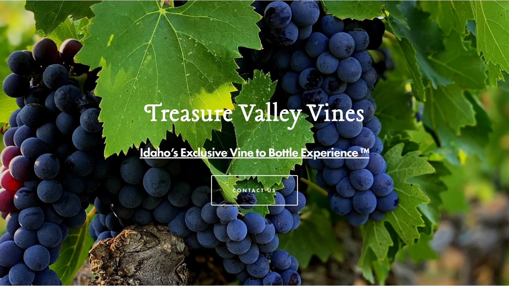
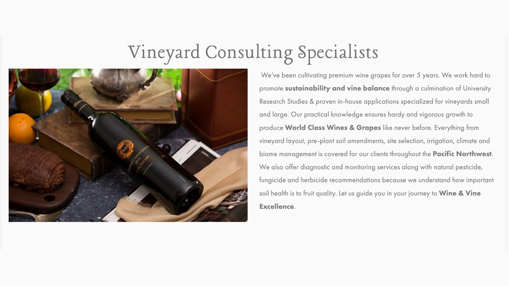
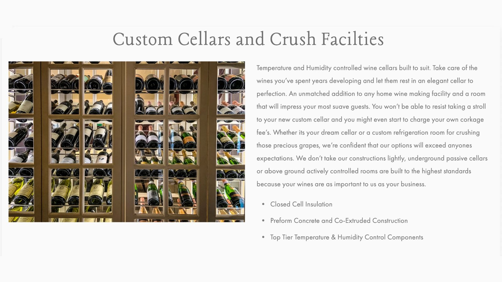
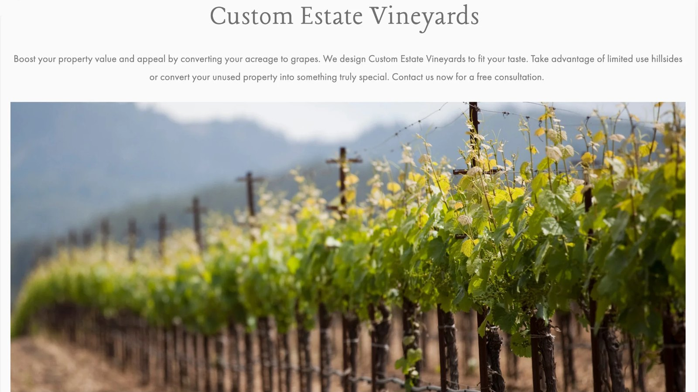

Kellen Levy · Revenue & Growth Systems
I build revenue systems, and the agents that run them.
Ten years turning ad spend into pipeline and pipeline into closed revenue for industrial, manufacturing and service companies. I now pair that operating experience with agentic AI: tools built on Claude and Grok that qualify opportunities, run local marketing and hand the judgment calls to people.
The operating model behind the work below
Track record
Acquisition & Creative
Paid media run as a system
Creative direction, targeting and budget pacing managed to return, not to spend.
Revenue Operations
CRMs rebuilt as operating systems
Pipeline design, lead routing, nurture and attribution that show where revenue actually comes from.
Go-to-Market
New markets, lines and territories
Positioning, sales enablement and launch plans that give sales teams something real to sell.
Agentic AI
Agents that do the work, people who approve it
Tools built on Claude and Grok that handle repetitive review and execution, and escalate anything uncertain.
Perfect Paver Co
Paid Acquisition & Content Strategy · Kaldera Analytics · 2024–Present
Client engagement through Kaldera Analytics. Led full-funnel paid social strategy, creative direction, and team management across 60+ campaigns in multiple Midwest markets.
Content Strategy
Scroll-stopping video & creative direction
Drone cinematography, completed project showcases, and luxury-framed footage built to stop the scroll.
- Drone cinematography & aerial views
- Before/after completed project content
- Luxury framing & high-interest creative
- $500K content budget managed
Budget Architecture
Proprietary pacing model across 60+ campaigns
Custom pacing model to manage spend, seasonality, and market allocation across 60+ concurrent campaigns.
- $2.4M in ad spend across all markets
- Seasonal budget allocation logic
- 60+ campaigns tracked & optimized
- Market-level performance benchmarks
Team & Operations
Sprint planning, SOPs & ICP development
Led three ad specialists through sprint-based execution, expanded ICP, and built company-wide marketing SOPs.
- Sprint planning — team of 3 managed
- ICP expansion into emerging markets
- Company-wide SOPs implemented
- Brand stewardship across all creative

Website · Homepage
perfectpaverco.com
Conversion-focused homepage with a free-estimate call to action and click-to-call up front, built for local service demand across every market.

Facebook / Meta · Ad Library
Active Campaign Overview
Four concurrently active ad sets across Midwest markets with multiple creative versions on Facebook, Instagram, and Messenger.

Website · Brand Video
Local. Proven.
Video-led proof section backed by headline stats on experience, states served and square feet restored.

Website · Social Proof
Why Choose Perfect Paver Co
Lifestyle photography paired with real homeowner testimonials, each tagged to the project location.

Website · Services
Our Services
Service cards for cleaning, sealing, polymeric sand, aftercare and repairs, each linking to its own landing page.

Website · Local SEO
Service Area Pages
Market pages across Ohio, Georgia, Florida, Indiana and Illinois, built to capture local search demand.
Problem–Solution Hook
Winter freeze and thaw cycles cause pavers to shift, sink, and loosen beneath the surface. Our specialists restore and stabilize your pavers, then prepare them for long-term protection.
Get A Free Inspection →
Investment Framing
Pavers deteriorate as joint sand erodes. If the base is stable, restoration is typically a fraction of replacement cost. Addressing it early protects your investment.
Restore Before It Costs More →
Seasonal / Empathy Open
Chicago winter feels long. The gray skies. The cold mornings. But brighter days are almost here — now is the time to reset your patio or driveway.
Get Quote →
Spend gets attention. Systems keep it.
Up next ·
Meadowlark Log Homes
Revenue Infrastructure & Automation · Kaldera Analytics · 2024–Present
Client engagement through Kaldera Analytics. Built foundational revenue infrastructure — rebuilding HubSpot, developing nurture systems, and launching M&R as a profitable adjacent revenue channel.
Pillar 01
HubSpot as the CRM operating system
Rebuilt HubSpot into the central hub for lead tracking, pipeline visibility, and sales activity.
- Pipeline structure & deal stage design
- Contact & data standardization
- Sales activity tracking & dashboards
- CRM adoption across the team
Pillar 02
Nurture campaigns & workflow automations
Built automated follow-up sequences and nurture flows to manage inbound demand and recover cold leads.
- Inbound lead routing & workflows
- Multi-touch nurture email sequences
- Re-engagement campaigns
- Lifecycle stage automation
Pillar 03
M&R as a profitable revenue channel
Developed Maintenance & Restoration as an adjacent business line — funding paid acquisition for the core log home business.
- Positioning & offer development
- Dedicated demand gen & print collateral
- Separate funnel & conversion tracking
- Channel diversification strategy

Website · Homepage
meadowlarkloghomes.com
Full-service web presence built around trust, craftsmanship and three generations of regional identity.

Print · Mailer Flyer
Restoration & Preservation Flyer
Direct mail for the M&R line: staining, sealing, preservation and repair, with a QR code to reach a restoration expert.

Print · Door Hanger
Neighborhood Canvassing Piece
UV protection, moisture defense, rot prevention and long-term preservation, with the service benefits front and center.

Website · Product Catalog
Log Home Models
Model cards with package pricing, square footage and bedrooms, built to move buyers from browsing to a floor plan.

Website · Buyer Journey
Three Ways to Build
Three clear paths, from a proven model to a fully custom home, each with its own next step.

Website · M&R Landing Page
Maintenance Services
Dedicated landing page for the M&R line with an inline lead form, feeding the separate M&R funnel.

Website · M&R Services
Finishing & Staining
Service page for log home finishing and staining, part of the M&R line's dedicated web presence.
Sometimes the best new revenue is already inside the business.
Up next ·
Kampgrounds of America · K2
Marketing Strategy & Go-To-Market Blueprint · Client Engagement · 2026
Twelve-month marketing plan built for Kampgrounds of America and launched in 2026 to grow K2, the reservation and operations platform behind 500+ KOA campgrounds. The plan turns proof KOA already owns into a repeatable engine that makes K2 easier for Franchise Development to sell, easier for owners to adopt, and harder for the industry to ignore.
Pillar 01
Position & prove K2
One K2 story told through four owner outcomes: revenue, occupancy, efficiency and staff time.
- Positioning & value proposition
- Customer proof library
- ROI calculator & comparisons
Pillar 02
Enable franchise sales
Tools that let Franchise Development sell K2 as a business advantage a prospect can measure.
- Sales dashboards from K2 data
- Living battle cards
- Account-based marketing
Pillar 03
Release & adoption engine
An 11-step launch process connecting IS, Product, Marketing, Sales and PR, so every release gets adopted.
- Standard release process
- Central knowledge system
- Targeted adoption campaigns
Pillar 04
Market leadership
K2 becomes a steady source of data-backed stories the outdoor hospitality trade wants to tell.
- Trade media & exec bylines
- Speaking & awards
- Annual K2 benchmark research

Page 1 · Overview
Easier to Sell. Easier to Adopt.
The four-pillar engine and K2's 2025 public record in one view.

Page 2 · Sales Enablement
Proof That Sells
Sample sales dashboard, a battle card, and a five-step ABM flow.

Page 3 · Launch & Lead
Launch. Adopt. Lead.
The release process, knowledge system, and editorial story engine.

Page 4 · Measurement
Measure What Works
Five-stage scorecard and a three-phase, 12-month roadmap.

Website · K2 Product Page
Campground Management Software
K2's home on KOA's franchise site, where the platform story meets prospective owners.

Website · Public Proof
K2 in 2025
6.1M card transactions, 3.3M KampStore transactions and 2.3M reservations: the public proof the plan builds on.

Website · Features
Dynamic Optimization & More
Feature storytelling for Dynamic Optimization, KOA Rewards and Select My Site, the features behind each sales story.

Website · Franchise Paths
Getting Access to K2
Franchise, build, buy and sell paths that connect K2 to the Franchise Development pipeline.
Franchise Sales
Leading with the strongest proof story lifts first-to-second meeting conversion from 33% to 58%, so roughly 1.75× more prospects advance from the same lead volume.
1.75× more prospects advancing
Owner Revenue
Adoption campaigns take reservation add-ons from 42% of parks to about 70%. At $11.30 per reservation and a 10% attach rate across 2.3M reservations, owners add about $2.6M a year.
~$2.6M added owner revenue / yr
Measurement
Every pillar reports on one chain from awareness to business outcomes. Sales stories are tested against real conversions, and K2's own activation data measures every adoption campaign.
Monthly scorecard, quarterly review
Proof that already exists is the most underused asset in marketing.
Up next ·
Control Bionics · NeuroStrip
90-Day Demand Generation Plan · Client Engagement · 2026
Interactive demand generation plan built for Control Bionics and launched in 2026, with a buyer playbook for the sales team. NeuroStrip is a wireless sensor that shows, live on an iPad, how hard each muscle is working. The plan defines the audience, message, budget and expected return of an account-based program built to reach 20 qualified sales calls a week.
Targeting & Buying Group
Who to reach first, and who signs
Physical therapy groups with 5 to 25 clinics first, then pro and college sport, with everyone else handled inbound.
- 70 / 20 / 10 account mix
- Seven roles across four approvals
- Top objections with answers
- Buyer playbook for sales
Campaign & Channels
"See the muscle behind the number"
One idea said three ways for executive, operations and clinical buyers, tested against a holdout group.
- Video, display, native & carousel
- Direct mail & geofenced mobile
- Search ads & email sequences
- A/B messages with keep and cut rules
Budget & Unit Economics
Lean, Base and Aggressive options
$45K, $90K and $150K scenarios, each tied to calls, pilots, customers and first-year value.
- Cost per call & per customer
- Day 30, 60 and 90 checkpoints
- Lead handoff & reply times
- Salesforce build for tracking

Interactive Plan · Overview
The 90-Day Plan
A two-layer page: a plain answer up front, with the math and assumptions one click deeper.

Buyer Playbook
The Buying Group
Who signs, who approves clinically, who runs the pilot, and who decides rollout.

Budget Model
Lean vs. Base vs. Aggressive
Interactive comparison of spend, qualified calls, pilots and new customers per quarter.

Plan · At a Glance
$90,000 Over 90 Days
The investment, the goal and the Day 90 run rate on one screen.

Plan · Targeting
Priority Segment
About 1,000 physical therapy groups with 5 to 25 clinics, sized to sustain a full campaign calendar.

Plan · Channels
Paid Media Mix
Account-based ads, Google Search and email carry three quarters of paid media, each with a performance threshold.

Plan · First 90 Days
Build, Test, Scale
Month one tests at low spend. After Day 60, budget follows performance.
Return on Spend
At the $90K Base budget, the program produces about $180K in first-year customer value per quarter: a 2.0× return in year one, before any group adds clinics.
2.0× first-year return
Unit Economics
About $510 per qualified call all-in, 45% under the $930 break-even. About $4,100 to acquire a customer worth $7,500 in year one, paid back in under 7 months.
1.8× first-year value to CAC
Measurement
Half the target accounts are held out from ads to measure true lift. Two messages per buyer cluster, a 30% threshold to win, and five numbers reviewed every week.
Incremental lift, not last click
Every number should trace back to a decision.
Up next ·
Rhin-O-Tuff
Director of Growth & Go-To-Market · Performance Design Inc. · 2023–2024
Work completed as Director of Growth & Go-To-Market Strategy at Performance Design Inc., exclusive sales and marketing partner for Rhin-O-Tuff. Owned the full revenue stack — paid acquisition, partner enablement, trade shows, web, and LinkedIn.
Demand Generation
Paid search, LinkedIn & web overhaul
Rebuilt the digital demand engine across paid search, LinkedIn and the website, tripling web traffic.
- Paid search campaigns
- LinkedIn content & thought leadership
- Website & product page rebuild
- 3× web traffic growth
Dealer & Partner Enablement
75 new dealer accounts
Equipped the dealer channel to sell Rhin-O-Tuff, adding 75 new accounts to the network.
- Dealer recruitment
- Partner sales enablement
- Channel marketing support
- 75 new dealer accounts
Trade Shows & Events
Live demos that drive pipeline
Trade show presence built around live machine demos, like the Tornado Autopunch EX at the Americas Print Show.
- Booth strategy & live demos
- Pre-show LinkedIn promotion
- Show lead follow-up
- Revenue 17% above forecast

Website · Homepage
rhin-o-tuff.com
Bold, product-first homepage leading with the Tornado Autopunch EX and a clear labor-savings message.

Website · Product Page
rhin-o-tuff.com · Tornado Autopunch EX
Conversion-focused product page rebuilt as part of a broader demand overhaul that drove a 3× increase in web traffic.

Website · Brand Story
Durability Since 1994
Brand heritage section built on the durability, reliability and efficiency message.

Website · E-Commerce
Shop by Category
Category navigation across punches, dies, coil inserters and accessories for direct online orders.

Website · Conversion
Register Today
Warranty registration and the six-year, made-in-the-USA promise as a trust-building call to action.

LinkedIn · Event
Trade Show Promotion
Americas Print Show — Booth 116 Tornado Autopunch EX demo announcement.

LinkedIn · Thought Leadership
Rising Labor Costs
Industry stat hook tied to product benefit — reduce labor costs up to 40%.

LinkedIn · Case Study
Editorial RENUEVO
Customer case study — 50% labor reduction for a multi-million dollar digital printer.

LinkedIn · Social Proof
Expert Spotlight
5-star testimonial from EBR Graphic Arts production manager on machine reliability.
Demand is built in the field as much as online.
Up next ·
ANW Distributors
Market Development Lead · Idaho Territory · 2022–2023
Work completed as Market Development Lead at American Northwest Distributors. Built and scaled a new Idaho territory from zero — combining field sales, local marketing, demand generation, and CRM integration.
Territory Development
Built a new market from zero
Launched and scaled the Idaho territory through field sales, local marketing, and account-based demand generation.
- Zero-to-revenue territory launch
- Field sales & account acquisition
- Localized campaigns & activations
- Territory-level P&L management
CRM & Digital Systems
Pipeline visibility & forecasting
Integrated CRM and digital tools across 175+ accounts — improving pipeline tracking, forecasting accuracy, and performance visibility.
- 175+ accounts on CRM platform
- Pipeline tracking & forecasting
- Account planning standardization
- Revenue forecasting at territory level
Events & Activations
12+ revenue-generating events
Planned and executed 12+ activations as revenue-generating initiatives — driving engagement, account conversion, and repeat business.
- 12+ events as revenue drivers
- Account engagement & conversion
- Repeat business & relationship depth
- Competitive market positioning

Website · Homepage
anwdistributors.com
Elegant, image-led web presence for a 20-year import and distribution operation serving Seattle, Portland and Spokane.

Website · Coverage
Statewide in WA, OR & ID
Distribution footprint mapped across Washington, Oregon and Idaho, including the Idaho territory built from zero.

Website · Business Stats
Scale at a Glance
Brands carried, customers served and years in business, presented as quick proof of scale.

Website · Community
Community Commitment
Local community programs alongside offices and contacts for each state.
The best insights are grown, not bought.
Up next ·
Led business development for Treasure Valley Vines, an Idaho vineyard consulting and development firm offering site selection, vineyard layout, irrigation, custom estate vineyards and custom cellars across the Pacific Northwest. Behind the title, I owned the company. I built its demand engine, collected viticultural and climate-response data in partnership with Battle Creek Research and Dr. John A. Gamon, and sold the IP rights to the resulting insights: my first successful exit.
Demand Generation
A niche pipeline engine
Digital marketing, partnerships and referral systems that produced consistent pipeline for vineyard development services.
- Paid search for high-intent demand
- Digital acquisition & inbound
- Referral systems
- Consistent, predictable pipeline
Brand & Content
Storytelling for long-cycle buyers
Brand storytelling and content strategy tailored to winery and agricultural buyers in relationship-driven sales.
- Winery & agricultural audiences
- Content built for long cycles
- Relationship-led nurture
- Vine-to-bottle positioning
Revenue & Partnerships
Full lifecycle, lead to signed deal
Lead generation, proposals, pricing and deal execution, plus regional partnerships that raised referral volume and lowered acquisition cost.
- Proposal development & pricing
- Deal execution
- Regional partnerships
- Lower customer acquisition cost
The question: can vineyards use less water under hot, dry conditions without giving up yield or grape quality? Grapes make an ideal model. Their physiology and form visibly register environmental stress, and thousands of years of cultivation knowledge provide a deep baseline to measure against.
- Common garden35 varieties grown side by side in Shasta County, CA
- TreatmentsIrrigation levels and a simulated drought
- Proximal sensingOptical and thermal sampling at leaf and canopy scale
- AssaysPhysiology, structure, yield and berry chemistry
- SelectionCultivars resilient to heat and drought
Conceptual model of the study hypothesis
Hypotheses
Resilience shows up as an optimal response, read from combined optical and thermal metrics, between too little light for growth and too much under stress.
Resilient vines recover more effectively from heat and drought and hold on to more of their growth and productivity.
Vines that show the optimal response also carry superior berry chemistry for winemaking.
Method
Demonstrated methods for establishing drought-tolerant vines suited to dry farming or limited irrigation.
Dry-farming ready
Selection
Protocols for identifying cultivars that tolerate reduced irrigation and stay resilient under heat and drought.
Cultivar protocols
Reach
Lower water use while maintaining yield and quality, with methods that extend to other crops facing hot, dry conditions.
IP sold

Website · Homepage
Vine to Bottle
Brand-led homepage positioning the firm as Idaho's vine-to-bottle specialist.

Website · Services
Vineyard Consulting
Site selection, layout, soil, irrigation and biome management for clients across the Pacific Northwest.

Website · Services
Custom Cellars & Crush Facilities
Temperature and humidity controlled cellars, a high-value add-on to vineyard projects.

Website · Services
Custom Estate Vineyards
Turning acreage and hillsides into estate vineyards, with a free consultation offer to drive inbound.
Long sales cycles reward patience and precision.
Up next ·
Torr Industries
Enterprise Accounts Manager · Capital Equipment · 2017–2018
Work completed as Enterprise Accounts Manager at Torr Industries. Owned national OEM account revenue across E&J Gallo, Constellation Brands, and Kendall-Jackson — managing six-figure capital equipment sales cycles while introducing the company's first digital lead generation program.
Enterprise Accounts
National OEM account revenue
Owned revenue across E&J Gallo, Constellation Brands and Kendall-Jackson through six-figure capital equipment cycles.
- Six-figure deal cycles
- Technical solution selling
- Multi-stakeholder buying groups
- Long-cycle relationship management
Digital Lead Generation
The company's first inbound pipeline
Introduced digital lead generation to an industry that had operated entirely offline.
- First inbound lead program
- Top-of-funnel visibility
- Search & digital campaigns
- Google Ads across product lines
Web & Brand
Modernized web & sub-brands
Advised on web and brand modernization, including product pages and the Hive Brew cold coffee sub-brand.
- Product catalog & pages
- Hive Brew™ sub-brand
- Technical product positioning
- Search, display & video creative

Website · Homepage
torrindustries.com
Advised on web and brand modernization to position Torr for scalable demand. Accounts include E&J Gallo, Constellation Brands, and Kendall-Jackson.

Website · Product Catalog
BIB Filling Systems
Multi-SKU capital equipment catalog — 140W HS, 140W AS, 145B, and 150 series automatic bag and pouch fillers.

Website · Product Page
TORRclose™ 203 Box Top Flap Sealer
Technical page for a vertical BIB sealer — 18 cartons per minute, Allen-Bradley PLC, stainless steel construction.

Sub-Brand · Homepage
Hive Brew™ by Torr
40% higher yields, 30-minute brew times, 2–28 scalable brew cells. Distinct brand identity within the Torr ecosystem.

Sub-Brand · Product Page
Hive Brew™ 700 & 701
7 brew cells expandable to 28 — up to 4,500 gallons of RTD per 8-hour shift. Supported technical sales and product positioning.

Google Search · Text Ads
Product-Line Search Campaigns
Search ads built around each product line: paste and purée, bag-in-box, liquid filling, cold brew coffee systems and equipment financing.

Google Display · Image Ad
Food Packaging Machines
Display creative that leads with the machine itself and a single, direct call to action.

YouTube · Video Ad
Box Formers & Closers
Video showing the TORRForm 201 and TORRClose 203 forming and sealing up to 20 cartons per minute.

Google Display · Mobile
Bag in Box & Food Packaging
Mobile display units positioning Torr as a leading manufacturer of product filling and packing machines.
The best automation still asks permission.
Up next ·